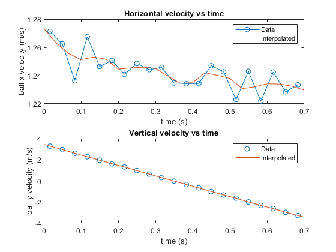

Contents
Questions 1-3
clc,clear,close all
scale = 430/1;
h = 1/30;
load('hc_keep.txt')
mn = size(hc_keep);
frames = mn(1);
t = (0:frames-1)*h;
hc_keep = hc_keep/scale;
ballx = hc_keep(:,1);
bally = hc_keep(:,2);
cartx = hc_keep(:,3);
carty = hc_keep(:,4);
dx = diff(ballx);
dy = diff(bally);
dt = h;
velx = dx/dt;
vely = dy/dt;
t2 = t(1:end-1);
t2 = t2 + dt/2;
dvelx = diff(velx);
dvely = diff(vely);
accx = dvelx/dt;
accy = dvely/dt;
t3 = t2(1:end-1);
t3 = t3 + dt/2;
x = [ballx bally]';
[ p, v, a, j ] = filt_7pt_mat( x, h );
figure(1)
subplot(3,1,1)
plot(t,ballx,'-o',t,p(1,:))
xlabel('time (s)')
ylabel('ball x (m)')
title('Horizontal Position of the ball vs time')
legend('Data','Interpolated')
subplot(3,1,2)
plot(t,bally,'-o',t,p(2,:))
xlabel('time (s)')
ylabel('ball y (m)')
title('Vertical Position of the ball vs time')
legend('Data','Interpolated')
subplot(3,1,3)
plot(ballx,bally,'-o',p(1,:),p(2,:))
xlabel('ball x (m)')
ylabel('ball y (m)')
title('Vertical vs Horizontal position of ball')
legend('Data','Interpolated')
figure(2)
subplot(2,1,1)
plot(t2,velx,'-o',t,v(1,:))
xlabel('time (s)')
ylabel('ball x velocity (m/s)')
title('Horizontal velocity vs time')
legend('Data','Interpolated')
subplot(2,1,2)
plot(t2,vely,'-o',t,v(2,:))
xlabel('time (s)')
ylabel('ball y velocity (m/s)')
title('Vertical velocity vs time')
legend('Data','Interpolated')
figure(3)
subplot(2,1,1)
plot(t3,accx,'-o',t,a(1,:))
xlabel('time (s)')
ylabel('ball x acceleration (m/s^2)')
title('Horizontal acceleration vs time')
legend('Data','Interpolated')
subplot(2,1,2)
plot(t3,accy,'-o',t,a(2,:))
xlabel('time (s)')
ylabel('ball y acceleration (m/s^2)')
title('Vertical acceleration vs time')
legend('Data','Interpolated')

Question 4
n = 1;
P = polyfit(t,v(2,:),n);
slope = P(1);
g_mean_acc = mean(a(2,:));
fprintf('The acceleration of gravity calculated from slope (g_slope_v) is %.3f m/s^2\n',slope)
fprintf('The acceleration of gravity calculated from mean vertical acceleration of gravity (g_mean_acc) is %.3f m/s^2\n',g_mean_acc)
The acceleration of gravity calculated from slope (g_slope_v) is -9.842 m/s^2
The acceleration of gravity calculated from mean vertical acceleration of gravity (g_mean_acc) is -9.812 m/s^2
Questions 5
xcart = hc_keep(:,3);
ycart = hc_keep(:,4);
x2 = [xcart ycart]';
[ pcart, vcart, acart, jcart ] = filt_7pt_mat( x2, h );
d = pcart(1,end) - pcart(1,1);
vcartx = vcart(1,:);
vcartx(end-3:end) = NaN;
vi = vcartx(1);
vf = vcartx(end-4);
g = 9.81;
mew = (vi^2 - vf^2)/(2*g*d);
fprintf('\nThe coefficient of Coloumb friction on the cart is %f\n',mew)
The coefficient of Coloumb friction on the cart is 0.002646
Question 6
rho = 1.225;
Cd = .47;
ball_diameter = 11;
ball_diameter = ball_diameter/scale;
A = (pi/4)*ball_diameter^2;
F_drag = .5*rho*(v(1,:).^2)*Cd*A;
Pwork = polyfit(p(1,:),F_drag,2);
F_drag_poly = polyval(Pwork,p(1,:));
W_drag_data = trapz(p(1,:),F_drag)
W_drag_polyfit = trapz(p(1,:),F_drag_poly)
figure(4)
plot(p(1,:),F_drag,p(1,:),F_drag_poly)
xlabel('ball x pos (m)')
ylabel('Force of drag (N)')
title('Force of drag vs ball x')
legend('Data', 'Polyfit')
mass_ball = (2*W_drag_polyfit)/(v(1,1)^2 - v(1,end)^2);
fprintf('The mass of the ball is %f kg\n',mass_ball)
W_drag_data =
1.9887e-04
W_drag_polyfit =
1.9890e-04
The mass of the ball is 0.003630 kg